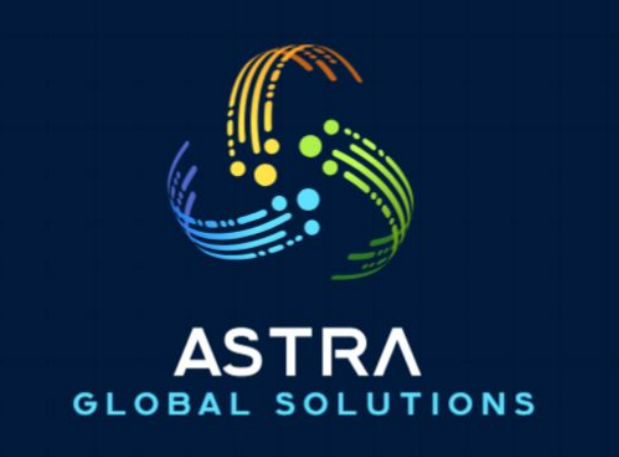

Resultados ágiles y asertivos
Nuestra meta es entregar soluciones de calidad en tiempo récord y con mínima pérdida de recursos.

Para qué buscar un simple proveedor si en el Ecosistema de Astra Global encuentras soluciones integrales a retos complejos con rapidez, tecnología e innovación.
Hablar con el equipoSomos un equipo de desarrollo de soluciones integrales que representa a marcas especializadas en distintos sectores industriales y corporativos, para ofrecer a instituciones públicas y privadas servicios y productos diseñados a la medida a través de implementaciones de base innovadora.
Nuestra meta es entregar soluciones de calidad en tiempo récord y con mínima pérdida de recursos.
Donde hay conocimiento, alianzas estratégicas con especialistas y experiencia, no tiene cabida la improvisación.
Metodología y conocimientos globales, siempre a la vanguardia de nuevas prácticas, creando soluciones innovadoras.
Acción: levantamos la necesidad operativa o industrial y diseñamos la hoja de ruta en un proyecto estructurado y viable.
Impacto: evita retrabajos y sobrecostos por una mala definición inicial del problema.
Acción: asignamos y coordinamos a los integradores y especialistas idóneos dentro de nuestra red de aliados.
Impacto: elimina el desgaste administrativo de contratar y alinear múltiples proveedores por separado.
Acción: dirigimos los frentes internos y externos con metodologías ágiles y seguimiento digitalizado en tiempo real.
Impacto: su equipo interno se mantiene enfocado en el core del negocio, con información regular sobre los avances.
Acción: respondemos directamente por el resultado final, asegurando hitos cumplidos y quick wins.
Impacto: garantía de resultados medibles en tiempo récord y con responsabilidad unificada.
Contacto corporativo